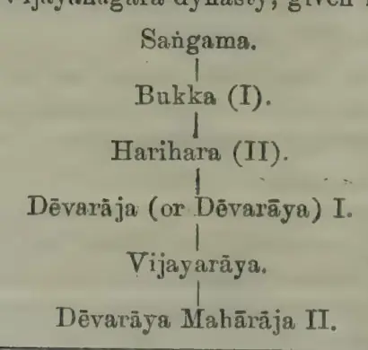

Srirangam copper-plates of Devaraya II : Saka-Samvat 1356
Reading this page
p. 23 is the page number printed in the volume; PDF 391 is that page's place in the scanned PDF, the page to open in the source scan. The badge at the bottom right shows the page you are reading as you scroll: click it to show printed or PDF numbers, or both, and to jump to a page. ↑ Top takes you back to the start.
Footnotes are numbered through the article and gathered at its end: click a number in the text to read its note in place, and ↩ in the notes to come back. Plates stand where the volume binds them, at the end of the paragraph they interrupt; All plates shows them together.
SRIRANGAM COPPER-PLATES OF DEVARAYA II; SAKA-SAMVAT 1356.
BY S. V. VISWANATHAN, M.A., MANNARGUDI, AND THE LATE MR. T. A. GOPINATHA RAO, M.A.,
TRIVANDRUM.
This is another set of copper-plates of the Vijayanagara king Dēvarāya II in the possession of the authorities of the Śrī-Raṅganātha temple at Śrīraṅgam (see above, Vol. XVII, No. 8). It was examined by the Assistant Archeological Superintendent for Epigraphy, Madras, in his Ep. Rep. for 1906, and noted as No. 19 of App. A. We edit the inscription below from inked estampages kindly supplied by Rao Bahadur H. Krishna Sastri. The description of the plates as noted on his office copy runs as follows: "Three plates in a ring in the Raṅganātha temple at Śrīraṅgam." The following further details may be added:—
The inscription is written on three1 copper-plates with a ring hole at the top. The first and third plates are engraved only on their inner sides. They measure 11:3" in length including the arch at the top, and 7" in breadth. The hole has a diameter of '75". The first and second plates are numbered at the left hand top corner with the Kannaḍa numerals 1 and 2 and the word puṭa in Nāgari; the third plate bears the Kannaḍa numeral 3 just below the ring hole. The rims of the plates are slightly raised. The writing runs across the breadth of the plates, is legible and devoid of any erasures. The average height of a letter is '25". The inscription is in the Nandi-Nāgari characters. But the signature Śrī-Vīrūpāksha at the end is in Kannaḍa. The Tamiļ letters ļ and ŷ have been used in lines 51, 58, 65, the latter being sometimes expressed by a rēpha marked above the letter ra (e.g., in ll. 50, 51, 53). The languages employed are Sanskrit which is largely the language of the inscription and Tamiļ (Dēśabhāshā) which is used in describing the details of the property granted. The latter is here and there interspersed with a few Kannaḍa words.
The orthographical peculiarities to notice in this inscription are:—the insertion of an anusvāra before n and n and the labial m, e.g., puṭṇya for puṇya (ll. 4 and 12), sāṅmrājya for sāmrājya (l. 20) and hiraṇṇya for hiraṇya (l. 66); the doubling of consonant after an anusvāra, as in bhrāntta (l. 30), iṅtta for iṅda (l. 47), maṅchchal (l. 49); and the omission of the visarga or the consequent doubling of s in chatusīmā (l. 38) and prāptai sarvair and āyai samanvītam (l. 44).
The genealogy of the first Vijayanagara dynasty, given in the inscription, runs thus:
